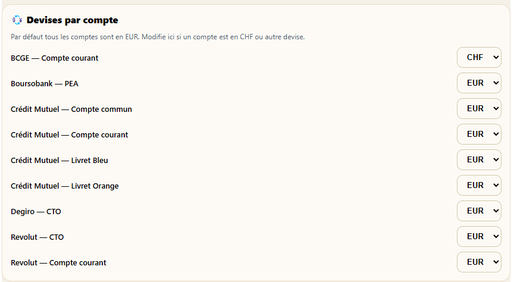
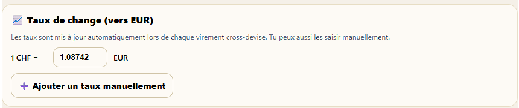
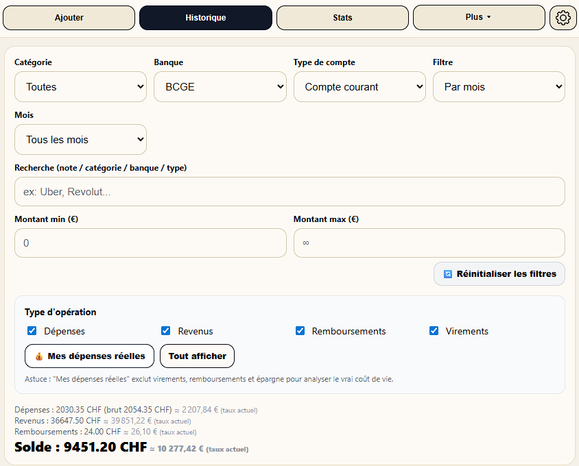

Vous vivez entre deux pays, travaillez en Suisse ou avez des comptes dans plusieurs devises ? Stateri gère tout automatiquement : chaque compte dans sa devise, chaque montant converti à la volée.

Dans les paramètres de Stateri, chaque compte bancaire peut être associé à sa propre devise. Par défaut tous les comptes sont en EUR — il suffit de changer ceux qui sont en CHF, GBP ou autre.
Stateri gère les taux de change de deux façons complémentaires, selon ce qui correspond le mieux à votre situation.
Lorsque vous saisissez un virement entre deux comptes de devises différentes — par exemple un virement de votre compte CHF vers votre compte EUR — Stateri détecte automatiquement le taux de change implicite à partir des deux montants saisis et le mémorise.
Exemple : vous virez 1 000 CHF → 1 087 EUR. Stateri en déduit 1 CHF = 1.087 EUR.
Vous pouvez aussi renseigner ou mettre à jour le taux de change à tout moment via le bouton "+ Ajouter un taux manuellement" dans les paramètres. Utile si vous voulez anticiper un taux futur ou corriger un taux obsolète.
Le taux saisi s'applique immédiatement à toutes les conversions dans l'application.

La section Taux de change (vers EUR) affiche le taux actuellement utilisé pour chaque devise étrangère détectée dans vos comptes.
Ici, 1 CHF = 1.08742 EUR — un taux capturé automatiquement lors d'un virement cross-devise et utilisé pour toutes les conversions de l'application jusqu'à la prochaine mise à jour.
Lorsque vous filtrez l'historique sur un compte en devise étrangère, Stateri affiche les montants dans la devise native du compte, accompagnés de leur équivalent en euros au taux actuel.

Une fois le taux de change configuré, Stateri l'utilise de manière cohérente dans toute l'application — aucune double saisie, aucun recalcul manuel.
Les graphiques de dépenses par catégorie et l'histogramme mensuel agrègent vos dépenses CHF et EUR en une seule valeur convertie, pour une vision globale de votre budget.
La fortune totale nette de l'onglet Patrimoine intègre le solde de vos comptes CHF converti en EUR. Votre patrimoine multi-devises s'affiche en un seul chiffre cohérent.
Le graphique de répartition par banque (dans l'onglet Patrimoine) compare tous vos établissements sur la même base EUR — même si certains sont en CHF.